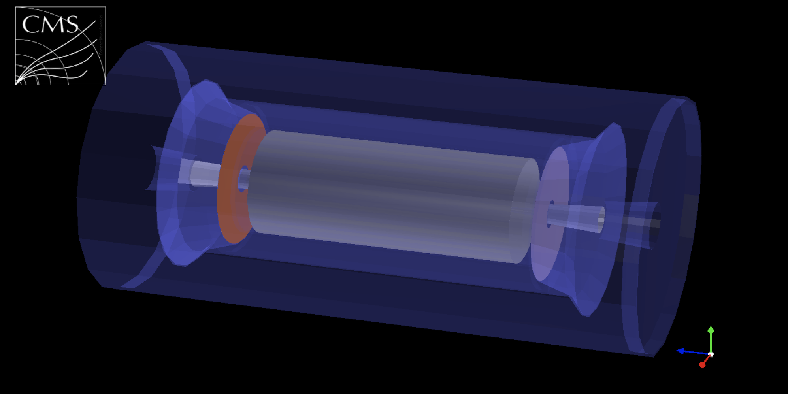
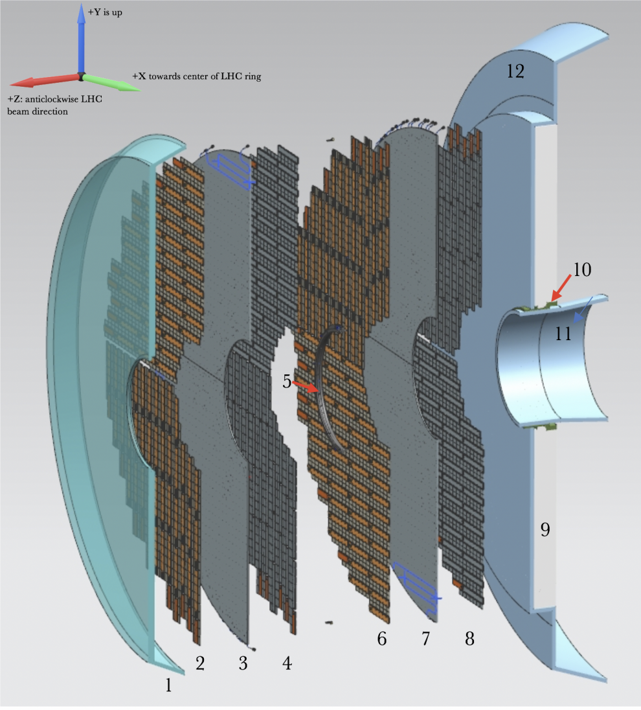
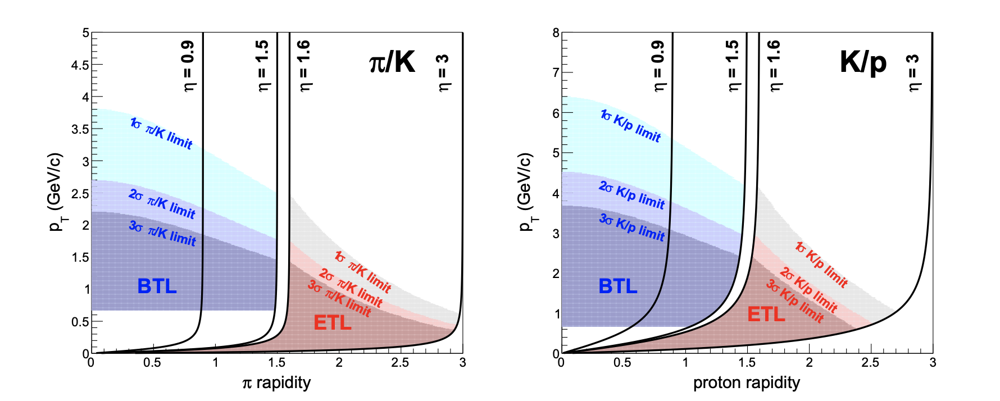

The CMS Minimum Ionizing Particle (MIP) Timing Detector (MTD) is a proposed upgrade to the CMS experiment that will be installed between the end of the LHC Run 3 (2025) and the start of Run 4 (2029). The goal of the MTD is to use ultra-fast sensors to measure the exact time, within a few 10s of picoseconds, when a particle reaches the detector. Because we will know the exact distance from the sensors to the collision point, we can use the time measurement to determine the particle's velocity. When combined with a measurement from the CMS tracker of the particle momentum, we can determine the particle's mass. This is a powerful technique that will allow us to distinguish pions, kaons, and protons from each other much more reliably than with the current CMS configuration. The MTD will also allow the rejection of 'pile-up' events in proton-proton collisions, reducing potential backgrounds in searches for new physics.

A schematic of the CMS MTD detector is shown above. The MTD is split into two sections, the barrel and the endcap. The barrel is essentially the circular side of a cylinder and covers the region \(|\eta| < 1.5\). The endcap is the flat side of the cylinder and covers the region \(1.6 < |\eta| < 3.0\). I am involved in the project designing the Endcap Timing Layer (ETL). The CMS MTD ETL (that's a lot of acronyms!) will be made of four disks of radiation hard ultra-fast silicon sensors. There will be a total of around 8.5 million readout channels covering 78 square feet of active sensor area. One of the major enginneering challenges of such a detector is to design power and cooling systems that can fit into a very small space, as the ETL must fit into a gap that is only a few inches wide between two other detectors. (The experiment is called the Compact Muon Solenoid for a reason!) Below is a blown-out diagram showing the various components of the ETL.

The anticipated MTD performance for the MTD barrel (BTL) and ETL is shown below. Bands are shown as a function of the particle's transverse momentum and rapidity. The bands show the expected power to separate pions from kaons (left) and kaons from proton (right). A very large fraction of the particles produced at the LHC have a transverse momentum of less than 3 GeV/c, which is precisely the region where the MTD will have the most impact! This will open the door to many new measurements that are difficult or not possible with the current CMS detector!
